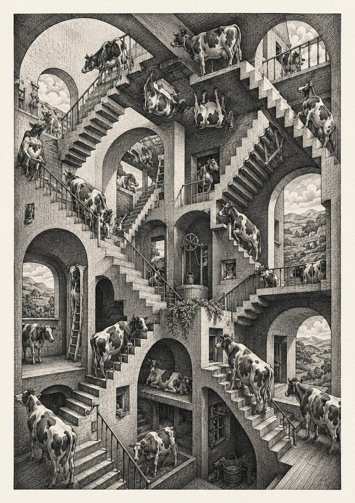
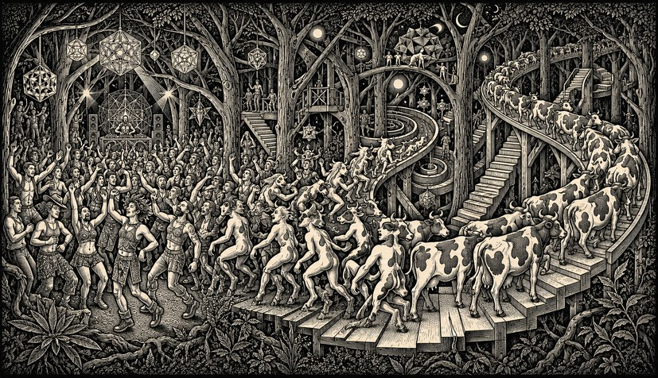
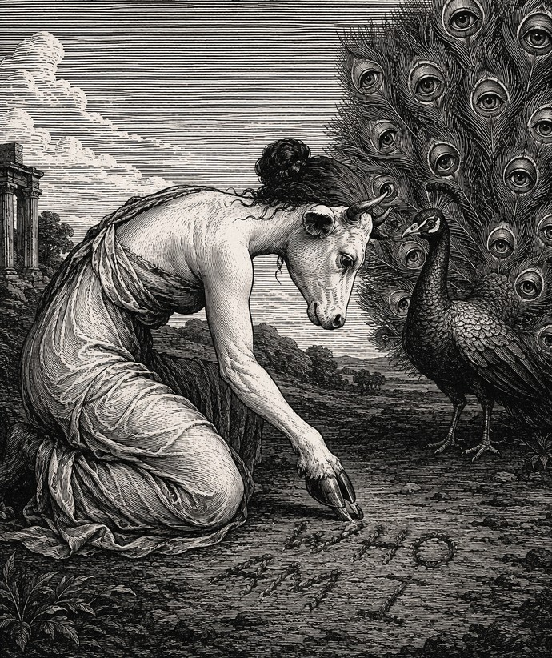
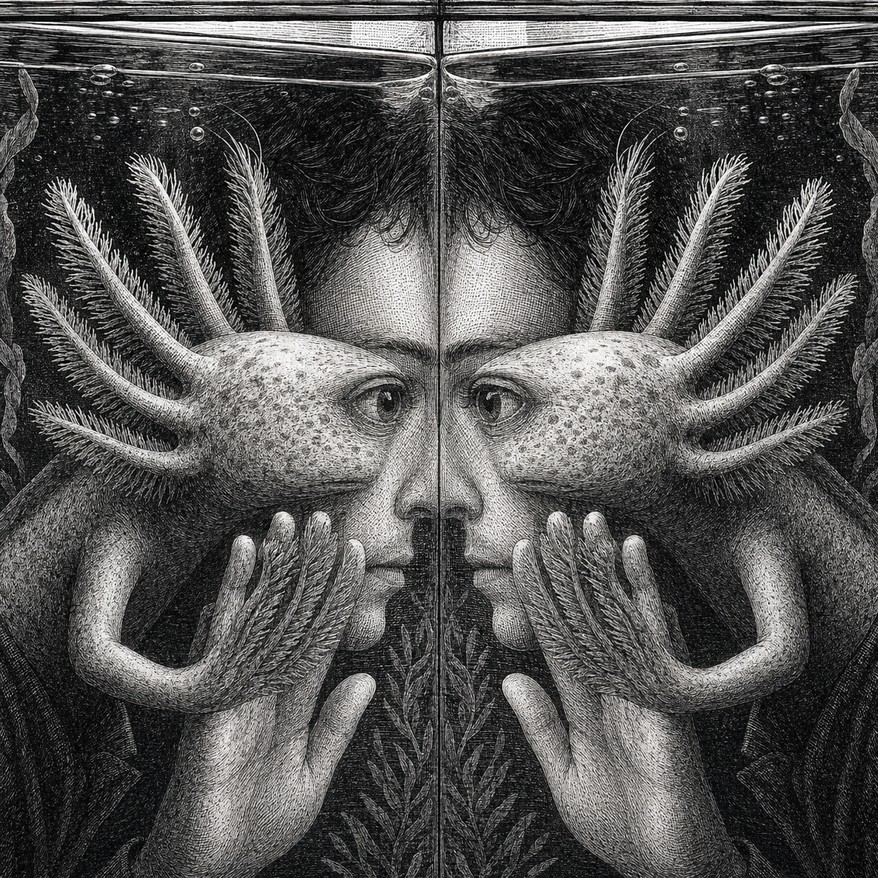
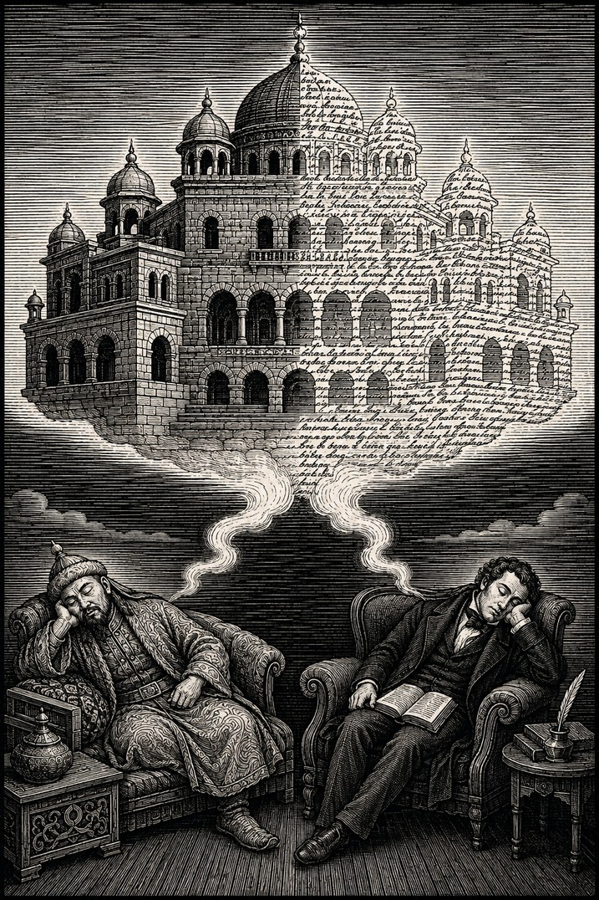
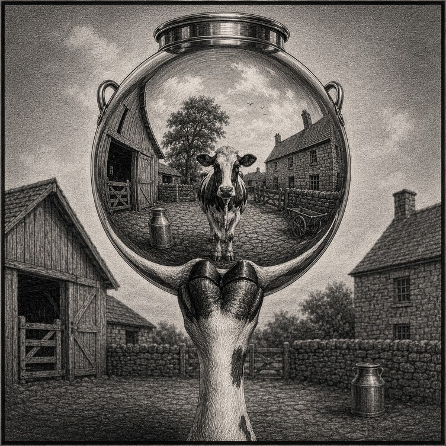

MOOWS / Issue 01 · August 2026
Metamorphs

Metamorphosis is a profound, abrupt change in physical form. The dictionary will refer you to butterflies and frogs; cows don't make the cut, because we change little by little rather than all at once, or so they say.
Perhaps there are cows amongst us who still hope to defy this law of nature by becoming truly bovine; perhaps others have secretly defied it already by achieving human form, and aren't telling.
Or perhaps the dictionary is biased by biologists, who care only about the flashy, fleshy transformations and miss the fact that remaining ourselves is an even more spectacular trick than changing into something completely different. Consider the celebrated caterpillar:
inside the chrysalis it dissolves almost entirely into soup, and the butterfly is rebuilt from a few clusters of cells that sat out the catastrophe. Impressive, in a showy way. A cow, meanwhile, performs a quieter miracle on a rolling basis — grass into cud, cud into milk, milk into more cow — without once losing her composure.
This tension between what we seem to be and what we are — outwardly stable, inwardly kaleidoscopic — comes out in our dreams, stories, and myths.

In Ovid's Metamorphoses, Jupiter transforms his lover Io into a white heifer to conceal her from Juno, and poor Io can reveal herself to her family only by scratching her name in the dust with a hoof. Ovid presents this as a tragedy, which tells you everything about his prejudices; nobody thought to ask Io whether it was an upgrade.
In the Metamorphoses of Apuleius, better known as The Golden Ass, the protagonist Lucius' fascination with magic takes an unfortunate turn when the slave girl he is fucking accidentally transforms him into a donkey — from where we stand, a lateral move at best.

In Kafka's novella of nearly the same name, Gregor's transformation has no cause, and neither Gregor nor his family make any attempt to do anything about it. His body is unrecognisable by morning, but only his outward form has changed: he lies on his armoured back worrying about the office, and his family miss the salary more than the son. This is the cruellest kind of metamorphosis — one that transforms nothing but the surface, and merely reveals what everyone involved already was.
Cortázar tells of a man who visits the axolotls in the aquarium of the Jardin des Plantes every day, pressing his face to the glass, until one day he finds himself inside the tank, an axolotl, watching the man walk away. The story ends with the axolotl consoling himself that the man may one day write a story about all this.

Borges writes about the extraordinary story of Kubla Khan, the fragment of a poem composed by the English poet Samuel Taylor Coleridge, who dozed off after reading a passage about a palace constructed by the Mongol emperor, and received the poem in a dream — but was interrupted by a visitor partway through writing it down and forgot the rest entirely. Twenty years after he published the fragment, an obscure history was translated into English which describes the original palace: "East of Shang-tu, Kublai Khan built a palace according to a plan that he had seen in a dream and retained in his memory."

"The first dream added a palace to reality; the second, which occurred five centuries later, a poem (or the beginning of a poem) suggested by the palace," writes Borges. "Whoever compares them will see that they are essentially the same."
Here is a thing, in other words, that stayed itself for five centuries by changing what it was made of — sleep, then stone, then sleep again, then verse. No cow can do that. But a dream that keeps coming back to be gone over once more is, at least, something we recognise: the same material, brought back up and chewed again. Borges must have known that by writing this story he was helping the universe ruminate.
Transformation in these stories is magical, terrible, desired and feared.
Many cows have a similarly ambivalent relationship with change; we want it, until we don't, but we need it ... and when we are at our most brave, we become it — little by little, all at once.
